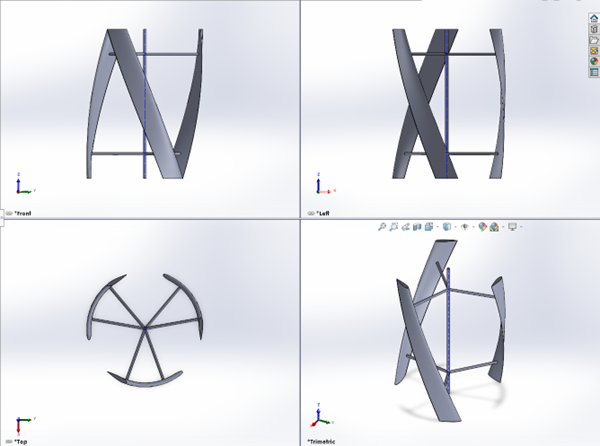
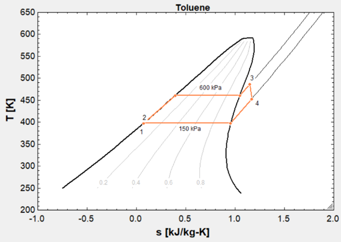
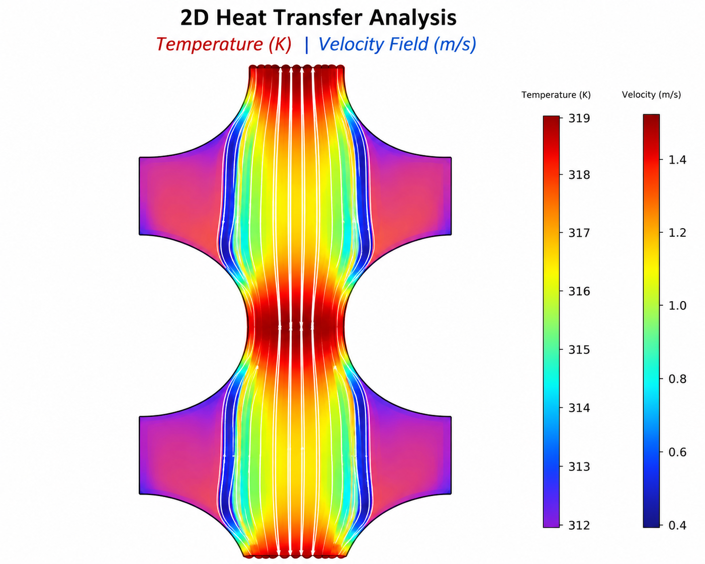
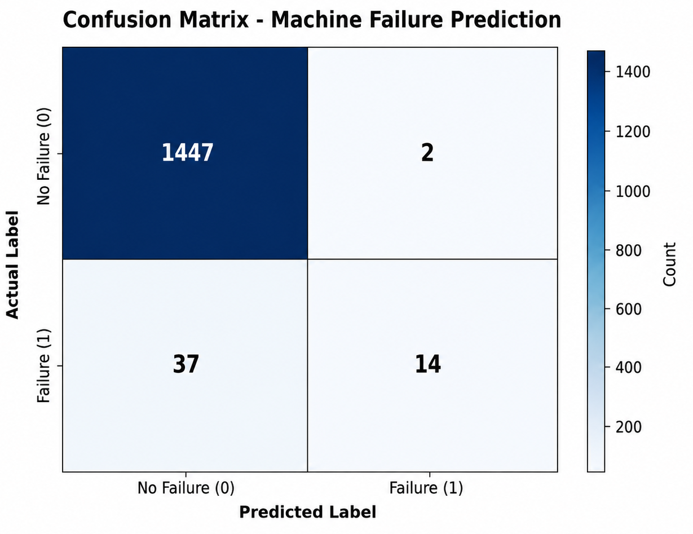
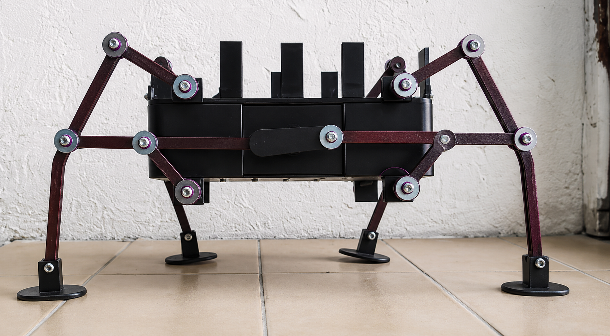
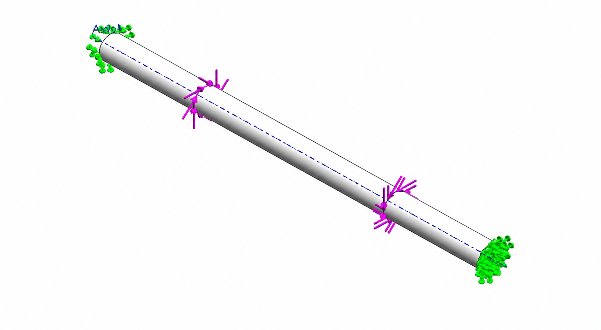
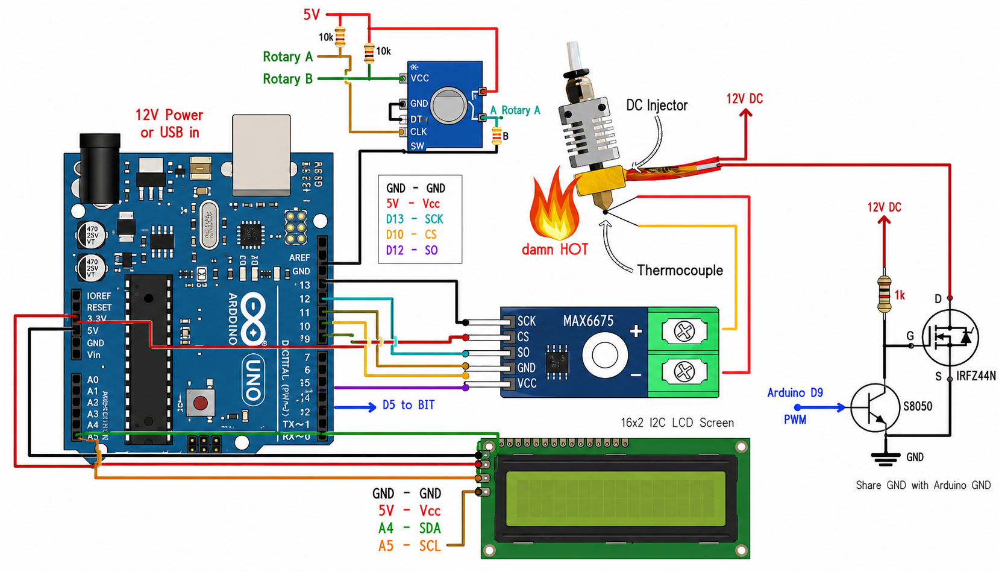
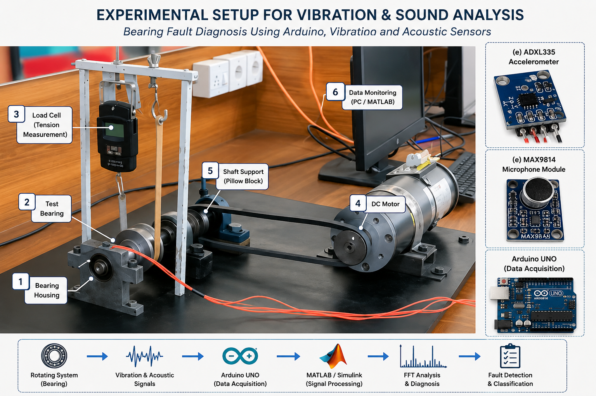

Energy systems · Fluid & thermal analysis · Structural mechanics
Machine learning for condition monitoring · Precision engineering
I am a Mechanical Engineering graduate from the Ghulam Ishaq Khan Institute of Engineering Sciences & Technology (GIKI). My work sits at the intersection of energy systems, computational fluid dynamics, structural analysis, and data-driven machine intelligence — applied to real engineering problems.
From designing Organic Rankine Cycles for remote geothermal sources to building physics-informed neural networks for battery state-of-health forecasting, I work across the full spectrum of mechanical and systems engineering. My approach is rooted in rigorous analysis, computational validation, and a drive to produce results that hold up in the field.
I have gained industrial exposure at two major national energy organisations — WAPDA's Tarbela Power Station and OGDCL's Tough Gas Field — and have contributed as a supply chain manager across 21+ vendor relationships for five years.
Coursework spanning thermofluids, machine design, vibrations, control systems, manufacturing, robotics, numerical methods, and data-driven engineering. Active participant in technical societies and international design competitions.

Role: Design & analysis lead — aerodynamic sizing, CFD simulation, structural design, fabrication, and experimental testing
Problem: Industrial facilities continuously discharge high-velocity exhaust air — typically at 15–20 m/s — through ventilation stacks and outlet ducts. This kinetic energy is routinely released to the atmosphere without recovery. Existing small-scale VAWTs are designed for low atmospheric wind speeds and are poorly matched to the high-speed, forced, directionally stable flow conditions found at industrial exhaust outlets. A turbine explicitly designed for this regime did not exist in commercial deployment.
Objective: Design, computationally validate, fabricate, and experimentally test a Vertical Axis Wind Turbine specifically optimised for industrial exhaust airflow — capable of extracting useful mechanical and electrical power from a previously unexploited on-site energy stream.
Engineering Approach: Following a structured literature review, a three-bladed helical Darrieus configuration was selected based on its superior torque smoothness and published peak power coefficients of 0.32–0.38. The NACA 0018 symmetric airfoil was chosen for its well-documented performance across the operating Reynolds number range of (1.8–2.4) × 10⁵. Key geometric parameters were derived analytically: chord length 0.18 m, blade height 1.2 m, rotor diameter 0.9 m (aspect ratio H/D = 1.33), rotor solidity 0.19, and a 60° helical twist — selected based on CFD literature establishing 60° as the optimal helix angle for maximum mean power coefficient. The design tip-speed ratio of 4 gives a rated angular velocity of approximately 1700 rpm at the 20 m/s design wind speed.
CFD Analysis: Three-dimensional simulation in ANSYS Fluent at the design operating point (λ = 4, V = 20 m/s) characterised blade-surface pressure distributions, velocity fields, and downstream wake structure. CFD-derived average torque: 6.76 N·m. Mechanical power output: ≈ 1.20 kW. Power coefficient: Cp ≈ 0.23 — consistent with the expected gap between idealised analytical estimates (Cp = 0.35) and numerical predictions that capture viscous and three-dimensional losses.
Fabrication: A hybrid manufacturing strategy was developed: helical blade cores were produced by additive manufacturing (FDM) — the only practical approach for a continuous 60° NACA 0018 twist at this scale — then reinforced with epoxy-impregnated carbon-fibre composite laminate for structural stiffness and surface quality. The shaft was fabricated from hollow mild-steel tube, supported by a welded steel frame with a two-bearing arrangement. The rotor was coupled to a permanent-magnet generator and instrumented with a tachometer and multimeter for experimental validation.
Experimental Results: Testing across 4–10 m/s confirmed physically consistent aerodynamic behaviour. Aerodynamic force per unit span increased from 0.55 N/m at 4 m/s to 2.30 N/m at 10 m/s — broadly following the predicted quadratic velocity dependence. Rotor speed progressed from 70 RPM at 3 m/s to 180 RPM at 8.5 m/s. The local flattening in force increment around 9 m/s was attributed to blade-stall onset and wake interaction effects on the NACA 0018 section at increasing angle of attack — physically consistent with the section's documented stall behaviour.
Tools: ANSYS Fluent (3D CFD) · SolidWorks (CAD) · FDM Additive Manufacturing · Carbon-Fibre Composite Layup · Instrumented Test Rig
Outcome: Functional full-scale prototype delivered and experimentally validated. Project awarded 2nd Place in the GIKI Senior Design Project competition, Faculty of Mechanical Engineering, 2026. Results provide a documented design basis and performance dataset for a class of industrial exhaust energy recovery device with no current commercial equivalent.

Role: Primary analyst — cycle architecture, component-level energy and exergy accounting, parametric optimization
Problem: Simple-cycle gas turbine systems reject a substantial portion of their fuel energy as high-temperature exhaust. Recovering this waste heat through a bottoming cycle significantly improves overall plant efficiency — but designing such a system requires rigorous component-level thermodynamic accounting to locate irreversibility sources and guide sizing decisions.
Approach: Designed a combined Brayton–Organic Rankine Cycle power system targeting 150 kW net output. Performed first-law energy analysis across all major components — compressor, combustion chamber, gas turbine, HRSG, ORC expander, condenser, and feed pump — to establish baseline performance. Followed this with a full second-law exergy analysis to quantify irreversibility at each component, pinpointing the combustor and HRSG as the dominant sources of exergy destruction. Conducted parametric studies on ORC boiler pressure to identify operating conditions that maximised net power output and thermal efficiency of the combined cycle.
Engineering Insight: The exergy analysis revealed that improving combustor design and reducing HRSG temperature mismatch offered greater efficiency gains than optimising the ORC subsystem in isolation — a finding that would not be visible through first-law analysis alone.
Tools: EES (Engineering Equation Solver) · MATLAB

Role: CFD analyst — geometry design, turbulence modeling, multi-variant simulation, performance trade-off analysis
Problem: Heat exchanger design involves competing objectives: maximising thermal performance while keeping pressure drop — and therefore pumping cost — within acceptable limits. Fin geometry and tube arrangement both influence this trade-off, but predicting the interaction effects requires CFD-level fidelity rather than correlation-based estimates.
Approach: Developed a 2D cross-sectional computational model of shell-side turbulent flow in COMSOL Multiphysics 6.3 using the RANS k-ε turbulence closure, with Reynolds number ≈ 75,000 confirming fully turbulent conditions. Established a validated baseline geometry and then evaluated four distinct design variants: triangular fin augmentation, rectangular fin augmentation, aligned tube arrangement, and reduced tube diameter — each with adapted mesh refinement strategies and consistent boundary conditions. For each variant, extracted velocity fields, pressure drop, and temperature distribution to build a comparative performance matrix.
Key Findings: Rectangular fins delivered the highest thermal enhancement (outlet temperature drop of ~6 K vs. baseline) but at the cost of significantly elevated pressure drop — unsuitable where pumping energy is constrained. The aligned tube configuration offered the best balance of heat transfer reliability and maintainability for routine industrial use. Reduced-diameter tubes cut pressure drop to ~1200 Pa while retaining adequate cooling — the preferred choice for energy-efficient operation.
Tools: COMSOL Multiphysics 6.3 · RANS k-ε turbulence model · Non-isothermal flow interface

Role: ML engineer — dataset preprocessing, architecture design, training, evaluation, and feature analysis
Problem: In manufacturing environments, unplanned equipment failure causes costly downtime and safety risks. Sensor streams — temperature, rotational speed, torque, tool wear — carry latent failure signatures that threshold-based rules consistently miss, particularly in the presence of class imbalance where fault events are rare relative to healthy operation.
Approach: Trained a binary classification ANN on the AI4I 2020 Predictive Maintenance dataset (10,000 samples; 96.6% healthy, 3.4% faulty — a realistic industrial imbalance). Conducted correlation analysis across all sensor features before model design; identified that machine type, air temperature, and process temperature carried the highest relative predictive weight (≈19% each), while tool wear and torque contributed lower but meaningful signal. Built a two-hidden-layer network (64→32 neurons, ReLU activations, Sigmoid output) trained with Adam optimiser and Binary Cross-Entropy loss. Evaluated performance using confusion matrix, precision, recall, and feature importance analysis rather than accuracy alone — critical given the class imbalance. The model achieved an accuracy classified as excellent, with low false-positive rate (FP = 2) and actionable recall on fault cases (TP = 14 from 51 total faults in the test set).
Engineering Significance: The feature importance analysis confirmed that thermal signals dominate failure prediction — insight directly applicable to sensor placement and monitoring system design in real industrial deployments.
Tools: Python · TensorFlow/Keras · Pandas · Matplotlib · Scikit-learn

Role: Structural and mechanism designer — linkage synthesis, SolidWorks CAD, kinematic simulation, fabrication, and prototype testing
Problem: Wheeled robots fail on rubble, uneven terrain, and debris-filled environments where legged locomotion has clear advantages. Designing a legged robot requires solving a non-trivial kinematic problem: converting continuous rotary motor output into a stable, repeating foot trajectory that lifts, advances, and places without toppling the chassis — using a single actuator.
Approach: Selected the Klann linkage mechanism based on its ability to generate a stable walking gait with a single crank input. Used dedicated linkage synthesis software to determine the motion profile and establish precise link dimensions before any physical hardware was committed. Transferred the verified geometry to SolidWorks for full 3D CAD modelling of all components — two cranks, two rocker arms per side, connecting rods, and leg members — followed by motion study simulation to validate displacement, velocity, and acceleration profiles across a full gait cycle. Material selection was constrained by load-carrying requirements (60–70 g payload), printability, and cost: PLA was selected for FDM 3D printing, enabling the tight geometric tolerances the Klann linkage demands. Electrical components — a 6V DC dual-shaft motor and 9V battery — were sized from force analysis and placed symmetrically to maintain dynamic balance. Total build cost: RS 2,400.
Results: Fully functional prototype demonstrated stable legged locomotion at 0.1 m/s on flat surfaces, with consistent ground contact across all four legs. The robot successfully carried a 60–70 g payload — meeting the design target. Limitation identified: grip loss on high-friction surfaces (carpet) due to foot geometry — a documented design constraint for future iteration.
Tools: Linkage synthesis software · SolidWorks (CAD + Motion Study) · FDM 3D Printing · Embedded DC motor drive

Role: Lead analyst — compatibility-based analytical design, three-iteration refinement, ANSYS and SolidWorks FEA verification
Problem: A four-segment shaft — fixed at both ends, with two applied torques — is statically indeterminate: the support reactions cannot be found from equilibrium alone. Simultaneously satisfying a maximum shear stress limit (factor of safety > 2 against ultimate shear of 70 MPa), a target angle of twist across a specified segment (2.5°–3.5°), and a practical constraint that all cross-section diameters must be whole-number values creates a tightly constrained multi-objective design problem with no closed-form solution.
Approach: Resolved static indeterminacy analytically using compatibility equations (zero net angle of twist across the full shaft length), then applied torsion formulae iteratively across three design cycles. Each iteration adjusted solid and hollow cross-section radii to bring both the factor of safety and twist angle within specification simultaneously — revealing an inherent trade-off: increasing outer radius improves safety factor but reduces twist angle, and vice versa. Three distinct design iterations were documented, with the final design achieving the required balance. Results were then independently verified using both ANSYS Mechanical APDL and SolidWorks Simulation. FEA confirmed maximum shear stress of 32.6 MPa at the fixed supports and angle of twist values at C and E consistent with analytical predictions — validating the hand-calculation approach and demonstrating solver convergence.
Material: Aluminium Alloy 1100-H14 (G = 26 GPa) — a ductile, homogeneous material appropriate for torsional loading analysis.
Tools: ANSYS Mechanical APDL · SolidWorks Simulation · Analytical torsion and compatibility equations

Role: System designer — plant characterisation, hardware build, PID implementation, Simulink modelling, closed-loop testing and analysis
Problem: Precise thermal regulation is essential in microfluidic and embedded diagnostic applications where biochemical reactions are highly temperature-sensitive. Designing a PID controller for a real thermal system requires characterising the plant dynamics first — including thermal inertia, sensor lag, and actuator non-idealities — before any gain tuning is meaningful. These hardware realities make embedded thermal control significantly more complex than textbook PID design.
Approach: Built and characterised a complete closed-loop thermal system. Began with open-loop step-response testing to extract plant parameters: a 50% PWM duty cycle produced a steady-state temperature rise of ~42.5°C above ambient, with a thermal time constant of approximately 12.5 seconds. This data guided PID gain selection and confirmed the need for derivative action to counteract thermal lag. Hardware comprised a K-type thermocouple with MAX6675 digital interface for feedback, a logic-level MOSFET (IRL3803L) for PWM-driven heater switching, and a rotary encoder for real-time setpoint adjustment — all controlled by an Arduino Uno executing the PID algorithm at a fixed sampling rate. The system was independently modelled in MATLAB/Simulink for controller validation before hardware deployment. Closed-loop testing documented practical control limitations: sensor conversion latency introduced feedback delay, integral windup caused heater over-run at setpoint, and encoder noise contributed minor disturbances. Each failure mode was diagnosed, documented, and linked to its root cause in hardware.
Results: System successfully regulated temperature to user-defined setpoints under closed-loop control. Overshoot and windup were characterised quantitatively and improvement strategies — anti-windup integration, derivative filtering — were identified for future implementation.
Tools: Arduino Uno · K-type thermocouple · MAX6675 · IRL3803L MOSFET · MATLAB/Simulink · PWM control

Role: Experimentalist — sensor system design, data acquisition, frequency-domain analysis, and ML-ready dataset preparation
Problem: Rolling-element bearing failures are responsible for a disproportionate share of rotating machinery downtime. Fault signatures are embedded in vibration, acoustic, and current signals — but identifying which signal type, at which frequency range, most reliably captures defects of varying severity is an open engineering question. Without experimental validation, condition monitoring systems cannot be properly specified.
Approach: Designed and executed a controlled experimental study on nine 6203-type deep groove ball bearings — one healthy and eight with artificially induced inner and outer race defects at four severity levels (crack sizes: 0.2 mm, 0.35 mm, 0.5 mm, and 1.0 mm), produced by Electro Discharge Machining to ensure clean, consistent defect geometry. Motor supply voltage was swept from 15V to 60V in 5V steps to simulate varying shaft speeds, giving ten operating points per bearing. At each point, vibration (Y and Z axes via ADXL335 accelerometers), acoustic emissions (Max9814 microphone, 50 dB sensitivity), and motor current signals were recorded simultaneously through an Arduino-MATLAB/Simulink data acquisition chain at a step time of 0.00125 s — yielding 8,000 data points per test. Acoustic tests were repeated twice per voltage level and averaged for ML dataset consistency. All signals were converted to the frequency domain using FFT and plotted on logarithmic magnitude-frequency axes, with analysis windows selected from literature: 0–5 kHz for vibration, 0–2 kHz for current, and 0–20 kHz for acoustics. Healthy bearing spectra established clean baseline profiles; defective bearings produced identifiable elevated harmonic content and impulsive peaks characteristic of race-contact faults.
Outcome: Produced a labelled multi-signal dataset across 9 bearing conditions and 10 speed levels — structured for future supervised ML classification. Dataset preparation included normalisation protocols, statistical feature extraction (RMS, kurtosis, crest factor), and spectrogram generation pathways for CNN-based fault classifiers.
Tools: Arduino UNO · ADXL335 accelerometers · Max9814 microphone · MATLAB/Simulink · FFT signal processing
Developed a transfer learning framework using pretrained SqueezeNet CNN on a limited dataset of 120 thermal images. Performed stratified 5-fold cross-validation across four motor fault conditions — achieving mean accuracy ≈ 97.1% (±2.3%) and macro F1-score ≈ 0.97, outperforming SVM baseline (≈82.5%) while guarding against data leakage.
Designed and analyzed a single-stage ORC using low-GWP refrigerant R600a. Conducted parametric studies on temperature, pressure, and mass flow to maximize net power output (≈11.7 kW) and cycle efficiency (peak ≈8.28%) while minimizing component-level exergy destruction.
Designed and optimized a 0.17 m chord hydrofoil using AI-inspired geometry and ANSYS CFX. Performed parametric studies on inlet velocity (0.94–10.6 m/s), angle of attack (0°–10°), and Reynolds number (≈1.6×10⁵–1.8×10⁶). Achieved peak lift-to-drag ratio ≈13.1 — a ≈61% improvement over the baseline design — with mesh-independent verification.
Developed an unsupervised condition-monitoring framework using RMS, standard deviation, and kurtosis features with multivariate Gaussian modeling and Mahalanobis distance anomaly scoring — trained exclusively on healthy bearing data. Validated on the CWRU dataset: macro AUC = 0.985, macro F1 = 0.978 across three inner-race fault severities. Lightweight design suitable for real-time deployment.
Developed a lightweight physics-informed neural network for one-step-ahead EV battery SoH forecasting using NASA battery degradation data. Incorporated monotonicity and endpoint-anchor constraints for physical consistency. Outperformed MLP, LSTM, and TCN baselines: MAE = 1.43%, RMSE = 1.89%, R² = 0.9931.
Contributed to aircraft geometry design and aerodynamic analysis using SolidWorks and XFLR5. Participated in aircraft fabrication and assembly.
Led proposal documentation that achieved 5th highest proposal score worldwide in the AIAA Design, Build, Fly Competition.
Facilitated communication and collaboration among stakeholders across a national-scale electronics competition.
Contributed to marketing and sponsorship acquisition for IEEE GIKI events.
Managed execution of an all-Pakistan RC aircraft design & build competition. Oversaw event logistics, team coordination, and ensured smooth operations across the full competition timeline.
Led planning and execution of major school-level events including Annual Day and Sports Gala. Coordinated teams, managed logistics, and oversaw delivery of high-profile functions.
Engaged in UN-affiliated youth outreach and awareness activities through the Pakistan chapter.
Download my CV for a complete overview of my academic background, research, projects, skills, and industrial experience.
Open to technical conversations, collaborations, and professional opportunities.